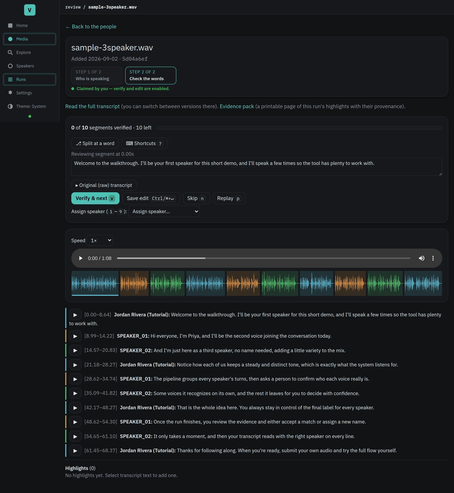
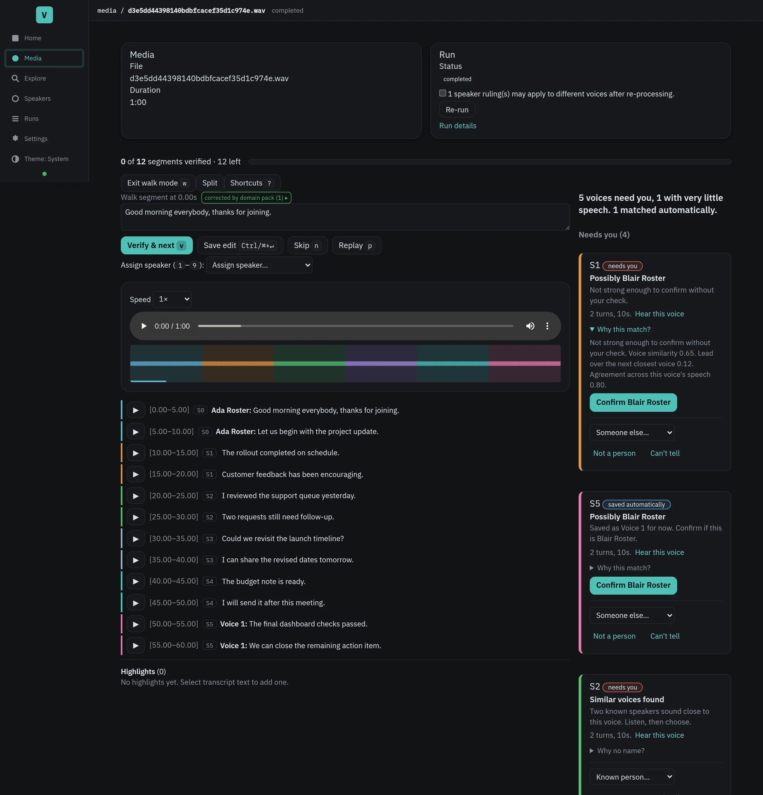
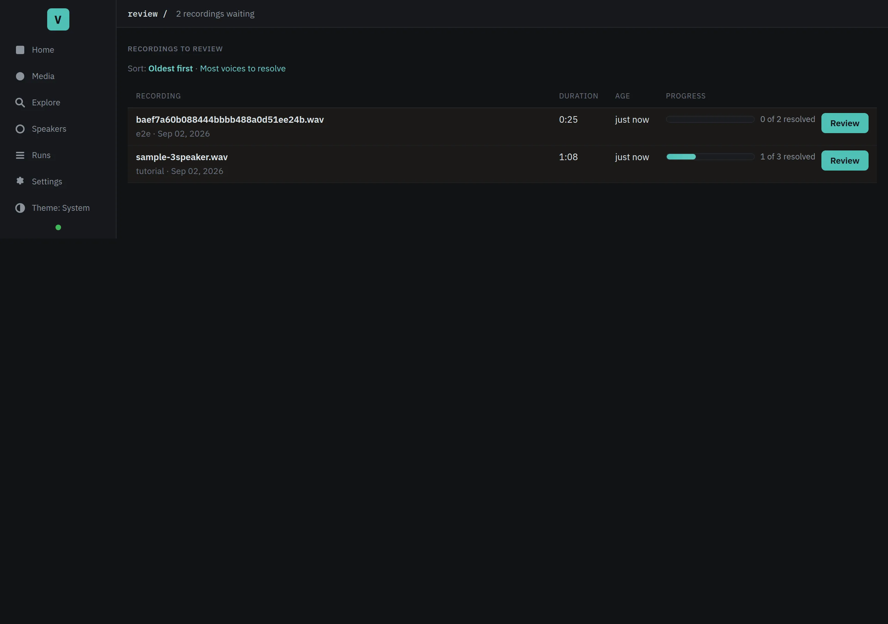
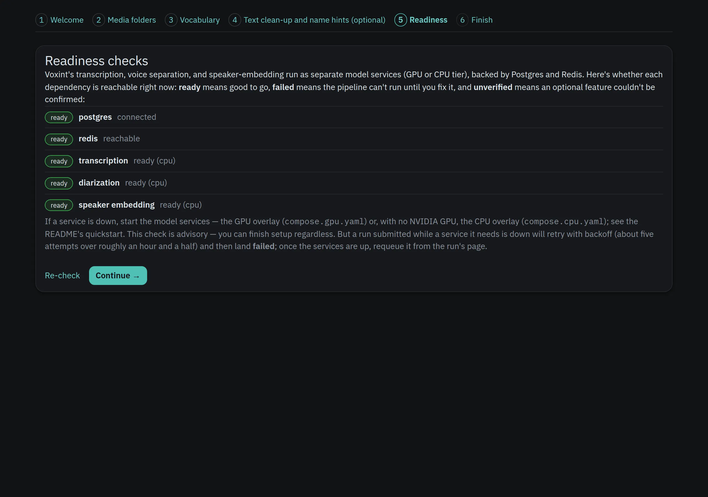
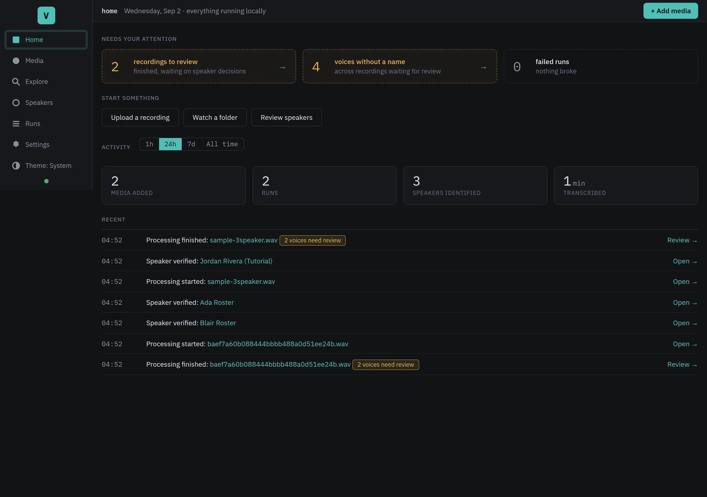

{kind=link}
{kind=link}
{kind=link}
{kind=link}
{kind=link}
Runs on your hardware
No cloud account needed. CPU, NVIDIA, AMD, or Apple Silicon.
Turn any recording into a speaker-labelled transcript, on your own hardware.
Open-source audio intelligence. Transcription, diarization, and speaker identification — all running locally. No cloud, no per-minute fees, nothing uploaded.
Self-hosted Apache-2.0 Yours to run

From recording to readable
For researchers, journalists, educators, and small teams who need their recordings to stay local.
Upload, paste a URL, or point at a folder.
Transcription (Whisper), speaker separation (pyannote), voice identity (TitaNet). All local.
Confirm speakers, fix wording. Machine guesses stay separate from your decisions.
On-screen read mode, or download as Markdown, plain text, subtitles, or structured data.
A closer look
From the first setup to the last speaker decision, see what needs your attention.




Local by design
No cloud account needed. CPU, NVIDIA, AMD, or Apple Silicon.
All model weights are bundled. No Hugging Face account or download step.
Load names, jargon, and prompts per project so specialist terms transcribe correctly.
Every run's progress lives in the database. Restart resumes where it left off.
Machine proposals stay separate from your rulings. Full provenance.
Search across all transcripts by meaning, not just keywords. Also runs locally.
Make it yours
You need Docker with the Compose plugin (≥ 2.24). The installer asks a few questions, then handles the rest.
Read the installation docsgit clone https://github.com/bengizmo/voxint.git && cd voxint
./scripts/install.shNo GPU? That's fine. Voxint runs the full pipeline on CPU with ~8 GB free memory.